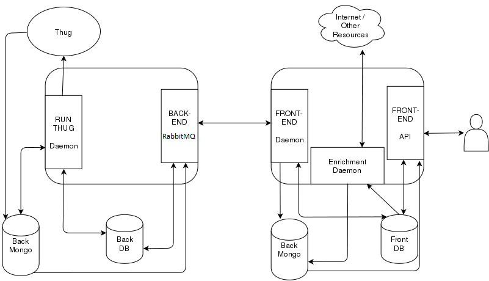
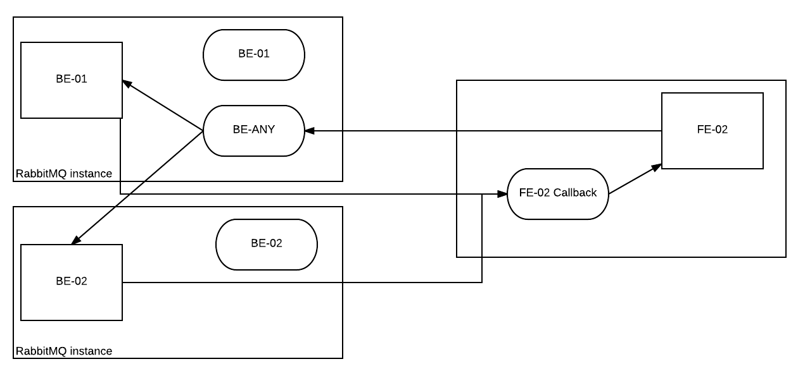

Architecture¶
Rumal is divided into two big parts namely the back-end and the front-end. Each has access to its own MySQL based DB as well as MongoDB. The steps how a scan is completed are given below.
Figure: Architecture Diagram for Rumal
- User submits task via front-end API and it gets store in the Front DB.
- The Front-end daemon periodically checks for new tasks and puts it on a back-end RPC queue (RabbitMQ) depending on which backend has been chosen by the user.
- The back-end consumer daemon receives the task on its private queue or the public any queue. The task is saved on the Back-DB. The consumer waits until a document is produced or until timeout.
- Run-Thug daemon periodically checks for new tasks in Back-DB and submits them to Thug which stores them in Back Mongo DB.
- Run-thug then proceeds to generate a document that contains all the info combined from many docs generated by Thug and stores its document ID in the Back DB.
- Once the thug task is completed, the back-end consumer replies to the front-end (via a RPC reply queue given when sending the message) with the document from the Back Mongo-DB.
- Front-end daemon receives the reply. The document is saved in the front MongoDB and the document ID added to the Front DB.
- The enrichment daemon acts on finished tasks and augments their data as per the plugins using internet and other resources. This augmented data is save to the MongoDB.
- The tasks are then retrieved using Front-end API and then displayed to the user.
Purpose & Design:
This project aims to be Thug’s dress - providing a convenient web GUI - but also its weapon, as it should provide a set of tools that should enrich Thug’s output with new metadata and allow for correlation of results.
While it is perfectly possible to use it as a simple web GUI for Thug on your own computer, with you as the only user, Rumāl has been designed to support multi-user environments, just like a sort of social network, allowing you to share your results and your settings with other users and groups.
Rumal is based on a model that ensures that the backend (where the analysis will be done) and the frontend (client facing side and the social network) remain decoupled. Keeping this in mind the Backend comprises of a Django Project with models for Tasks that interacts with the Thug Daemon. The Daemon reads and writes to the models of the Django Project. The Django Project included a RESTful API used by the frontend to submit tasks and fetch results and files, but this has been modified and now uses RabbitMQ message broker as a communication system between components.
Communications¶
Rumal uses RabbitMQ communication system to send messages between front-end and back-end. RabbitMQ is a message broker that implements the Advanced Message Queuing Protocol (AMQP).
Rumal’s front end sends a request to an RPC queue connected to one or more back-ends. This request contains task data and the call back queue to the front-end. Once the back-end has processed the message and run the scan, a reply is sent back to the call back queue connected to the front-end, containing scan results. This pattern is referred to as Remote Procedure Call (RPC) model on the RabbitMQ website.
Rumal was built to support the use multiple deployed front-ends and back-ends. Users can choice which back-end to use or the scans can be picked up by the first available back-end.
Figure: Front-end sending task to a specific back-end
FE-02 has a task that needs to be sent to BE-02. It creates the call back queue on FE-02 and posts the message on BE-02’s private queue. FE-02 now waits for the reply on the call back queue. BE-02 receives the task on its private queue and process the message. Once the Thug scan is run on the data provided in the task data, it sends the required data in a reply message on the call back queue for FE-02. FE-02 receives the message and saves the data in the databases.
Figure: Front-end sending task to Any backend, can be picked up by BE-01 or BE-02
FE-02 now has a new task, but this time no backend is specified for it to run on. In this case it create a call back queue and posts the message on the any queue. In this topology, the any queue is situated in BE-01 and BE-02 has access to this queue (configured in the BE-02 config file). Either BE-01 or BE-02 can receive the message based upon their current load of tasks. The message will be processed and a reply will be sent to FE-02 call back queue containing the results.
Communication Configuration¶
Currently configuration files on the back-end and front-end are used to link them together.
[backend]
host = localhost
is_master = true
Back-end config file.
- host: IP address of the master back-end where the any_queue is located. If the current back-end is master then this should be localhost.
- is_master: Boolean telling if this is master back-end.
[backend]
host =
rabbit_user = ****
rabbit_password = ****
BE =
Front-end config file.
- host: IP address of master back-end.
- rabbit_user, rabbit_password: rabbit credentials.
- BE: IP addresses of none master back-ends (0.0.0.0, 1.1.1.1 ...).